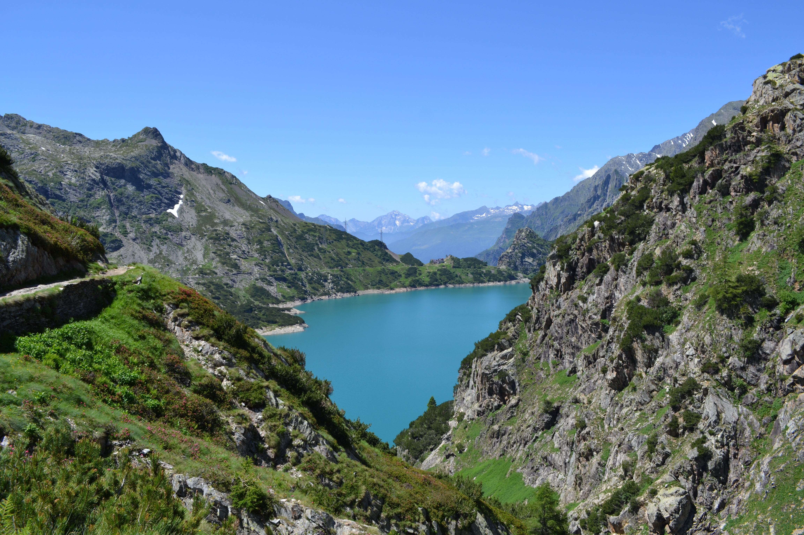

Now’s your chance to explore the Wild Atlantic Way, discover
endless space in Ireland’s Ancient East and find a break to
remember in Ireland’s Hidden Heartlands.
Soak up stunning scenery, scale a lofty mountain peak, sail across clear blue waters and trek through enchanting forest trails
Get outdoors and really experience an adventure in Ireland. Set off on a clifftop walking trail, escape on mountain rambles and test your mettle with epic multi-day hikes.